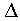
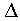

Square Bracket Characters
The Problem
Most IBM 3270 emulators have some degree of difficulty with the square-bracket
characters, [ and ]. The problem is that there is not a consistent
definition of what EBCDIC codes represent them. Hosts may define the square
bracket characters as X'BA' and X'BB' (as defined in the IBM Chararcter
Set Reference as standard EBCDIC characters), or as X'AD' and X'BD'
(which is what the IBM C compilers recognize). In addition, some (but not
all) hosts display these characters with a Graphics Escape (GE) sequence.
When the host and/or x3270 are misconfigured, the square-bracket characters
may be displayed as  and ,
or Ý and ¨.
and ,
or Ý and ¨.
Host Configuration
If you are using ISPF, you may simply need to use the correct terminal
translation table. According to the IBM's ISPF Planning and Customizing
(SC28-1298), Section 3.11, the correct translation table for displaying
square bracket characters is called 3278A.
In VM/CMS, the commands terminal apl on and set apl on
cause the X'AD', X'BD', X'BA' and X'BB' characters to be displayed with
a Graphics Escape (GE) prefix. With terminal apl off and set
apl off in effect, they are displayed without the GE prefix.
x3270 Facilities
x3270 has two facilities to deal with this situation: character sets and
keymaps. By selecting the correct character set and keymap, you can set
up x3270 to generate and display the proper codes for the square-bracket
characters.
-charset bracket is the default mode, and is used with
hosts that use X'AD' and X'BD' for the square-bracket characters. It can
be used if the host displays these characters with or without a GE sequence.
-charset us is for use with hosts that use X'BA' and
X'BB' for the square-bracket characters, and do not display these
characters with a GE sequence.
-apl (an abbreviation for -charset apl, -keymap
apl) is for use with hosts running APL, which use GE X'AD' and GE X'BD'
to represent and display the APL2 square-bracket characters.
Here is a table which summarizes the combinations of characters generated
and displayed in the various modes.
| |
keyboard generates
|
graphic displayed for EBCDIC codes
|
| x3270 Mode |
[ key
|
] key
|
X'AD'
|
X'BD'
|
X'BA'
|
X'BB'
|
GE X'BA'
|
GE X'BB'
|
GE X'AD'
|
GE X'BD'
|
| -charset bracket (default) |
X'AD' |
X'BD'
|
[
|
]
|
Ý
|
¨
|
|
|
[
|
]
|
| -charset us |
X'BA'
|
X'BB'
|
Ý
|
¨
|
[
|
]
|
| -apl |
GE X'AD'
|
GE X'BD'
|